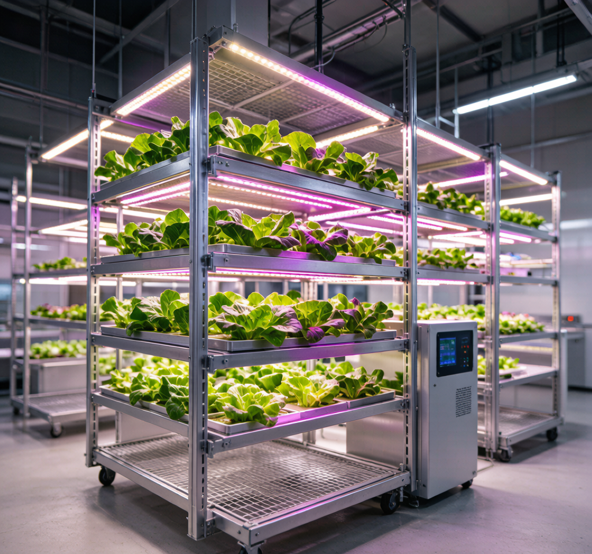

一条新闻暴露的产业拐点
8月4日，国内LED驱动龙头崧盛股份在投资者互动平台明确表态："公司将积极探索AI与LED驱动电源的融合、AI与植物照明的融合。"
这不是一句空话。往前推4天，7月31日工信部发布《工业绿色低碳发展"十五五"规划》，明确培育建设500个零碳工厂——植物工厂本身就是零碳园区的典型落地场景，新疆和田沙漠植物工厂已被视为教科书级示范。
两条政策线和产业线交汇到一个具体技术节点上：LED驱动电源。
传统植物照明驱动的死穴："一灯一电源，改光即改线"
植物照明和通用照明最大的区别：它不是照亮空间，而是编程光环境。
一颗生菜从育苗到采收，要经历苗期→营养生长→开花→结果四个阶段，每个阶段对光谱需求完全不同：
- 苗期：蓝光占比高（450nm），促进紧凑壮苗
- 营养生长：红光为主（660nm），加速茎叶扩展
- 开花期：远红光（730nm）调控开花时间
- 结果期：红蓝比调整+白光补充，提升品质
传统做法是什么？每个光谱配一个灯，每个灯配一个驱动电源。想从苗期切到营养期？换灯或者换通道。线缆布线像蜘蛛网，后期维护成本比灯本身还贵。
这就是华浩德在2026光亚展上拿阿拉丁神灯奖时，评委最看重的痛点——他们用H1-V六通道驱动器解决的正是这个"一灯一电源"的痼疾。
多通道驱动：从"供电盒子"到"光谱引擎"
核心架构变了
传统LED驱动：单路恒流输出，调光只调亮度。
多通道植物照明驱动：1+N路独立输出架构——一路主通道+多路辅通道，每路独立调光、独立编程。华浩德H1-V是"1+5"六路，uPowerTek是"1+3"四路，博兰得也是多路独立。
用一个电源替代过去4-6台电源，设备数量减少60%，故障点减少40%。这不是"升级"，是架构重构。
Power Transfer：被忽略的能效杀手锏
多通道驱动有个致命问题：如果某通道关闭了，那路功率不就浪费了？
uPowerTek和华浩德都给出了同一个解法——Power Transfer（功率转移）技术：当辅路通道关闭或低于满载时，冗余功率自动转移到主通道，最大化电源利用率。
举个例子：一台1000W四通道驱动，如果只有主路+一路辅路在工作（500W+250W），传统方案整体效率只有75%。加上Power Transfer，剩余250W自动转移到主路，主路跑到750W，整体效率回到94%+。
这个技术在通用照明里几乎用不上，但在植物照明里是刚需——因为植物不同生长阶段，并不是所有通道都同时满载。
光谱覆盖：380-800nm全光谱
英沃特斯（Inventronics）的方案最激进：动态光谱控制覆盖380-800nm——从近紫外到远红光，全段可调。这已经超出了人眼可见光范围（380-780nm），进入了植物光合有效辐射（PAR）的完整区间。
这意味着驱动电源不再只管"亮不亮"，而是管**"什么波长的光、多少比例、什么时候亮"**——本质上变成了一台光谱编程器。
AI进来干什么？
崧盛说的"AI+LED驱动融合"，到底融在哪里？
1. 光配方自适应
传统植物照明：人工设定每个阶段的光谱比例和时长。AI驱动：根据植物品种、生长阶段、环境温湿度、CO2浓度，自动生成并动态调整光配方。
英沃特斯已经做到了"光配方"管理，但目前还是人工预设。加AI后，驱动器自己学习："这批生菜在25℃、800ppm CO2下，660nm红光占比65%时光合效率最高"——然后自动调到这个比例。
2. 预测性维护
植物工厂7×24小时运行，灯灭了3小时可能毁掉一整批作物。AI驱动的核心不是"修复"，而是**"预测"**——通过电流波动、温度趋势、光衰曲线，提前7天告诉你"第3通道LED模组将在下周三达到光衰阈值，建议更换"。
uPowerTek已经把Glow-Free Dim Off技术做进去了——在植物休息期完全灭灯（不是调暗，是真灭），这对短日照植物开花控制至关重要。AI可以自动计算每个品种的"暗期需求"并调度各通道。
3. 能耗优化闭环
重庆大渡口区已经做了市政照明的AI节能标杆——综合节能率48%。同样的逻辑放到植物工厂：AI实时分析"当前光照+自然光补充+植物需求"，动态分配各通道功率，把每度电都花在刀刃上。
对LED驱动厂商意味着什么？
技术门槛在拉高
| 维度 | 通用照明驱动 | 植物照明多通道驱动 |
|---|---|---|
| 输出架构 | 单路恒流 | 1+N多路独立 |
| 功率范围 | 7-100W | 400-1600W |
| 光谱控制 | 调亮/调色温 | 380-800nm全段编程 |
| 核心技术 | 恒流精度 | Power Transfer+光谱混光 |
| 防护等级 | IP20-IP44 | IP67（高温高湿） |
| 智能化 | 协议调光 | AI光配方+预测维护 |
| 效率要求 | >90% | >95%（uPowerTek 96%） |
能做通用照明驱动的厂商很多，能做多通道植物照明驱动的厂商全球不超过20家。技术壁垒从"恒流源设计"变成了"系统级光谱管理平台"。
中国厂商正在领跑
华浩德（植物照明驱动唯一国家级专精特新"小巨人"）、uPowerTek（7年质保）、崧盛（AI+植物照明融合）、英沃特斯（380-800nm全光谱）、博兰得（大功率多路）——中国企业在植物照明驱动领域是全球第一梯队，Signify和ams-OSRAM在追赶中国方案。
三个判断
1. 多通道将成为植物照明驱动的标配——单路驱动在新建植物工厂中将被淘汰，就像手机相机从单摄变多摄。
2. AI光配方是下一个竞争壁垒——硬件参数（功率/效率/通道数）会迅速趋同，差异化将从"谁的AI光配方更精准"展开。
3. "一电多谱"模式会外溢到其他场景——体育照明RGBW、景观照明、商业氛围照明，都在向多通道+光谱可调演进。植物照明只是第一个吃螃蟹的。
关于NEXLAMP：NEXLAMP专注涂鸦Zigbee智能照明系统，提供全功率段LED驱动电源（7W-400W）、灯具及控制系统，已服务300+工程项目。联系人：刘先生 13825496855，www.nexlamp.com